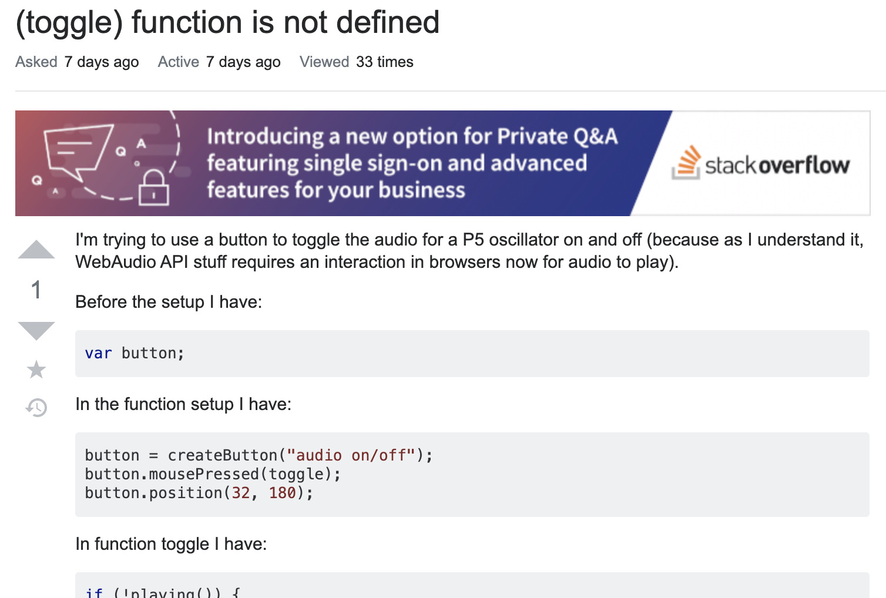
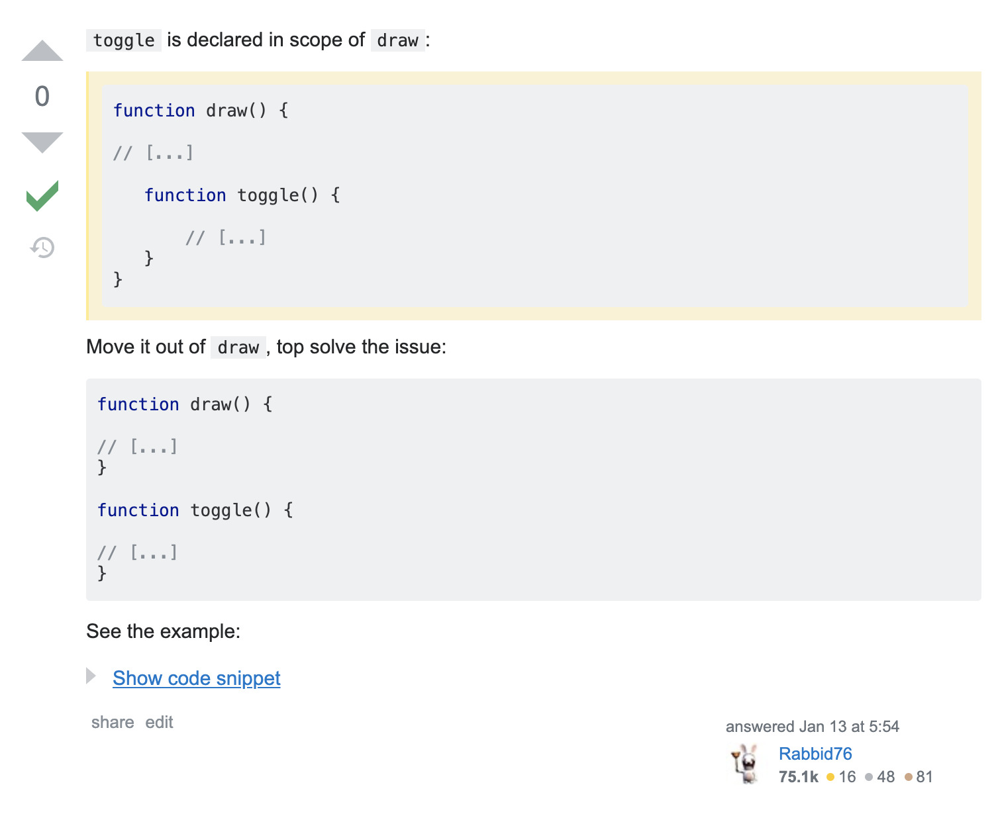

archive stuff, and keep track of things.
Back to Blog | Gary-Martin
Learning to Code |
|---|
|
This is something I've been looking forward to dedicating some time to, or at least introducing into my weekly schedule, for a long time. I have been coding for a couple of years now, in different programming languages, to create a variety of things mainly for work I have done with pyka. However, it's usually been someone else's code I have tweaked, and I've not always understood why or how it worked. And that has been quite confusing at times. So I've decided to learn a language properly, by making some interactive things for the web browser. So that I can create interesting and interactive music experiences with a new tool. That's kind of how I am looking at this whole experience. Like learning how to play a new instrument. How to hold it, what it's made of, what sounds it can make and how to make them. I have decided to use p5.js, made by Lauren McCarthy, as a starting point to create things with code. It has a great community and the website is full of examples and user guides for beginners. There are also a number of super fun videos made by Dan Shiffman, on his YouTube channel, The Coding Train. I have been using these to help me build my sketches. He is a great instructor, he’s super focused but very casual and informal in his approach. So my approach to learning how to code began by looking how to install the relevant programmes, and get a basic understanding of the setup code and the terminology required to put something together. I then started looking around for existing sketches similar to something I was looking to make myself. I then began editing the code, making small tweaks so I could see what I am controlling. From here I was able to say I had made my first coding sketch. I then repeated this process, finding more detailed sketches and making more and more drastic changes. Eventually, I had enough sketches with enough functions to be able to put together something ‘from scratch’, i.e. write the setup code myself and then take snippets of my existing code and reuse them to create something brand new. At this point I was able to start getting in to some standard practice habits, like asking questions on Stack Overflow. I was also able to refine my searches on Google for help; I knew what to ask for now that I knew the language better.  I’ve now made a number of sketches and slowly building my competence and familiarity with the creative process of making in p5.js. They are available to play with here. One thing I still need to adjust to with this new practice is being able to stop at more appropriate/sensible times. The problem solving aspect to coding is quite addictive and eats up a lot of time. And I know I should stop and come back to a problem at a later time rather than trying to push on too long. But this is something I can fold into my practice now I’ve identified it as an issue. Finished sketches have now been made publicly available here.. |